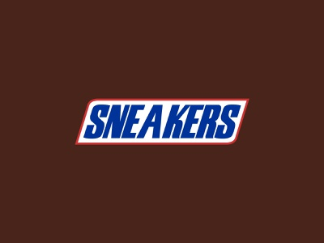

Sneakers
My HTML playground
Erdekes
itt aztan mind kisebbe
megy ez
mint az agyba szaras
Ez lenne a sneakershopom vaza I'm very excitedNIKE, Inc. designs, develops, markets and sells high quality footwear, apparel, and equipment, accessories and services. Its athletic footwear products are designed primarily for specific athletic use, although a large percentage of the products are worn for casual or leisure purposes. It focuses on NIKE Brand and Brand Jordan product offerings in seven key categories: running, basketball, football, men’s training, women’s training, NIKE sportswear, and action sports. It also markets product designed for kids, as well as for other athletic and recreational uses such as baseball, cricket, golf, lacrosse, outdoor activities, football, tennis, volleyball, walking, and wrestling. The company sells a line of performance equipment under the NIKE Brand name, including bags, socks, sport balls, eyewear, timepieces, digital devices, bats, gloves, protective equipment, golf clubs, and other equipment designed for sports activities. It also sells small amounts of various plastic products to other manufacturers through its wholly-owned subsidiary, NIKE IHM, Inc. Its reportable operating segments for the NIKE Brand are: North America, Western Europe, Central & Eastern Europe, Greater China, Japan, and Emerging Markets. The company wholly-owned subsidiaries include Converse Inc., which designs, markets and distributes casual footwear, apparel and accessories and Hurley International LLC, which designs, markets and distributes action sports and youth lifestyle footwear, apparel and accessories. Nike was founded by William Jay Bowerman and Philip H. Knight in 1964 and is headquartered in Beaverton, OR.“
, originally known as Blue Ribbon Sports (BRS), was founded by University of Oregon track athlete Philip Knight and his coach Bill Bowerman in January 1964. The company initially operated as a distributor for Japanese shoe maker Onitsuka Tiger (now ASICS), making most sales at track meets out of Knight’s automobile.
According to Otis Davis, a student athlete whom Bowerman coached at the University of Oregon, who later went on to win two gold medals at the 1960 Summer Olympics, Bowerman made the first pair of Nike shoes for him, contradicting a claim that they were made for Phil Knight. Says Davis, “I told Tom Brokaw that I was the first. I don’t care what all the billionaires say. Bill Bowerman made the first pair of shoes for me. People don’t believe me. In fact, I didn’t like the way they felt on my feet. There was no support and they were too tight. But I saw Bowerman make them from the waffle iron, and they were mine.”
In 1964, in its first year in business, BRS sold 1,300 pairs of Japanese running shoes grossing $8,000. By 1965 the fledgling company had acquired a full-time employee, and sales had reached $20,000. In 1966, BRS opened its first retail store, located at 3107 Pico Boulevard inSanta Monica, California next to a beauty salon, so its employees no longer needed to sell inventory from the back of their cars. In 1967, due to rapidly increasing sales, BRS expanded retail and distribution operations on the East Coast, in Wellesley, Massachusetts.
By 1971, the relationship between BRS and Onitsuka Tiger was nearing an end. BRS prepared to launch its own line of footwear, which would bear the Swoosh newly designed by Carolyn Davidson. The Swoosh was first used by Nike on June 18, 1971, and was registered with the U.S. Patent and Trademark Office on January 22, 1974.
In 1976, the company hired John Brown and Partners, based in Seattle, as its first advertising agency. The following year, the agency created the first “brand ad” for Nike, called “There is no finish line”, in which no Nike product was shown. By 1980, Nike had attained a 50% market share in the U.S. athletic shoe market, and the company went public in December of that year.
Together, Nike and Wieden+Kennedy have created many print and television advertisements, and Wieden+Kennedy remains Nike’s primary ad agency. It was agency co-founder Dan Wieden who coined the now-famous slogan “Just Do It” for a 1988 Nike ad campaign, which was chosen by Advertising Age as one of the top five ad slogans of the 20th century and enshrined in the Smithsonian Institution.Walt Stack was featured in Nike’s first “Just Do It” advertisement, which debuted on July 1, 1988.[15] Wieden credits the inspiration for the slogan to “Let’s do it”
, the last words spoken by Gary Gilmore before he was executed.

- Air Max 1
- Anniversary Red
- Curry
- Blue Void
- Animal Pack 2.0
- Air Max '90
- Air Max '95
- Air Max '96
- Air Max '97
- Air Max '98
| Mobil | Vezetekes | Fax | adress | mail@ittafaszom | |
|---|---|---|---|---|---|
| 074lalala | 0264salalala | faxam | szopki | Bihajbasznad 69 | Itt a pipa |